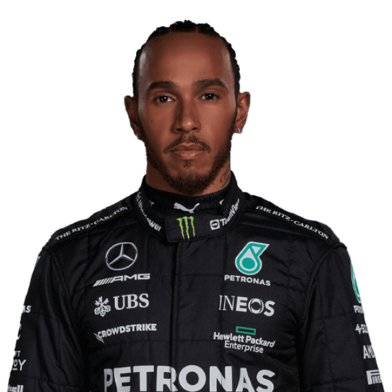
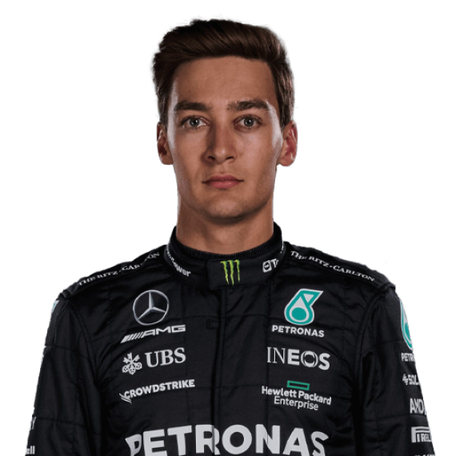

Team
Meet the team.
Team Principal
Toto Wolff
Drivers

Lewis Hamilton

George Russel
Meet the team.
Toto Wolff
Lewis Hamilton
George Russel
Under the leadership of Alfred Neubauer, the team ran the Mercedes-Benz W196 that featured a conventional open-wheeled configuration and a streamlined form. Mercedes experienced instant success with Juan Manuel Fangio, who joined from Maserati mid-season in time for the French Grand Prix. The Argentine took the chequered flag ahead of teammate Karl Kling, with Fangio adding another three wins during the rest of the season to claim the title.
However, the 1955 disaster at the 24 Hours of Le Mans killed Mercedes-Benz driver Pierre Levegh, along with 80 spectators, and resulted in the cancellation of the French, German, Spanish and Swiss Grands Prix. Mercedes opted to withdraw from the world of motorsport, including F1, at the end of the season.
Mercedes-Benz's parent company Daimler AG bought a minority stake in the Brawn GP team prior to the start of the 2010 F1 season. A sponsorship deal with Petronas was then struck, with the team rebranded as the Mercedes GP Petronas Formula 1 team. Ross Brawn was kept on as Team Principal, while the outfit continued to use the same base and workforce in Brackley, close to the engine plant in Brixworth.
Mercedes brought in the German duo of Nico Rosberg and Michael Schumacher – with the latter returning to F1 after a three-year absence – to be their driver pairing in 2010, while Nick Heidfeld was named as test and reserve driver.
F1 introduced 1.6-litre turbocharged V6 engines with a built-in recovery system in 2014, marking the beginning of the hybrid era. The change seemed to propel Mercedes to the front of the grid. Rosberg took victory in the opening race of the campaign in Australia, while Hamilton completed a Grand Slam victory in Malaysia ahead of his teammate, making it Mercedes' first 1-2 finish since the 1955 Italian Grand Prix.
Mercedes' dominance continued throughout the season, with the team clinching the Constructors' Championship in Russia, while Hamilton finished 67 points ahead of Rosberg to take the Drivers' title. The Silver Arrows ended the year with 18 poles, 16 wins and 11 1-2 finishes out of 19 races. On average, the nearest non-Mercedes car finished 23.2 seconds back during their 16 victories.
Mercedes won the constructors championship in 7 consecutive seasons from 2014 to 2021, with Rosberg winning in 2016 season and Hamilton winning the rest
After several years of dominance in Formula 1, Mercedes faced their strongest competition for some time in 2021, with Red Bull and Max Verstappen proving to be tough opponents.
2014, 2015, 2016, 2017, 2018, 2019, 2020, 2021
Juan Manuel Fangio X2(1954,1955),
Nico Rosberg X1 (2016),
Lewis Hamilton X6 (2014,2015,2017,2018,2019,2020)